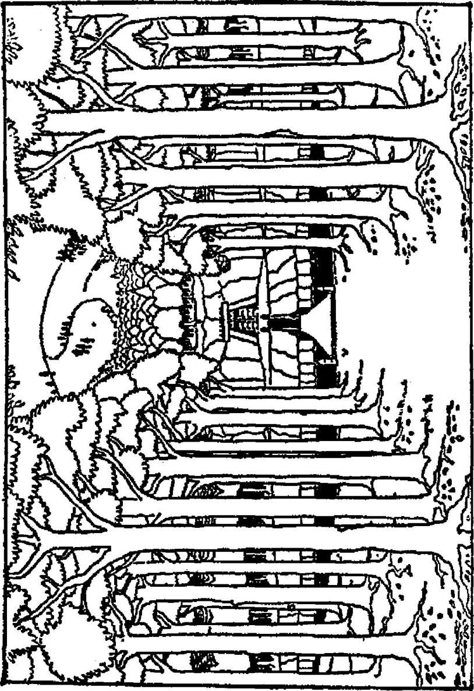

186
BÖLÜGO 9
P İ Ç İ L A R L A k ^ ç ı ş
Örümceklerle yapılan çarpışmadan sonraki gün Bilbo ve cüceler açlık ve susuzluktan ölmeden Önce çıkış yolunu bulmak için son bir umutsuz deneme daha yaptılar.
Kalktılar ve onüçünden sekizinin patikanın uzandığını tahmin ettiği yönde sendeleye sendeleye ilerlediler, ama haklı olup olmadıklarını hiç anlayamadılar. Böylesi bir gün ormandaki her gün gibi bir kez daha gecenin karanlığına karışıyorken bîrden etraflarında yüzlerce kırmızı yıldız gibi bir sürü meşalenin ışığı belirdi. Orman-elfleri yaylan ve mızraklanyla ortaya çıktılar ve cüceleri durmaya çağırdılar.
Kavga etmek akıllarının ucundan geçmedi. Cüceler yakalanmalarına gerçekten sevinecek durumda olmasalardı bile, sahip oldukları tek silah olan o küçük bıçaklar, elflerin karanlıkta bir kuşu gözünden vurabilen oklarına karşı pek fayda etmezdi. Bunun üzerine yalnızca zınk diye durdular ve oturup beklediler - yüzüğünü parmağına geçiren ve çabucak bir kenara kayan Bilbo dışında tabii. İşte bu nedenle elfier cüceleri birbirleri ardına dizip uzun bir sıra halinde bağladıklarında ve saydıklarında hobbiti hiç bulamadılar ve saymadılar.
Ayrıca tutsaklarını ormana götürürlerken meşale ışığının hemen ardında hızla ilerleyişini de ne duydular ne de hissettiler. Her cücenin gözleri bağlanmıştı, ama bu pek de fark etmiyordu. Çünkü Bilbo bile gözleri açık olduğu halde 187

2
a
m
2